Camera événementielles:
une vision artificielle haute
performance et basse consommation, inspirée de la biologie
Sami BARCHID

Caméra événementielle
Caméra conventionnelle
- Résolution 📈
- FPS 📈
- Mémoire et puissance de calcul 📈
Consommation énergétique en vision 📈
Caméra événementielle (DVS)[Gallego2020]
- Inspirée de la biologie
- Événements asynchrones lors d'un changement d'intensité du pixel
- ➡️ Mouvement
Exemple
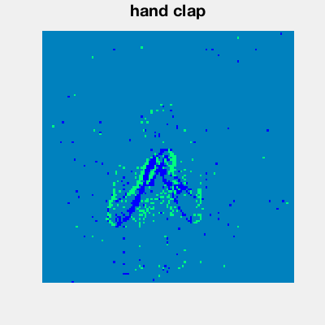DVS ⚔️ Frame
From video here: https://www.youtube.com/watch?v=LauQ6LWTkxM
Avantages
- Représentation "sparse"
- 🚀 Latence plus basse (microseconde)
- Flou cinétique
- 🛡️ Conditions d'illumination extrêmes
- 🌠Efficacité énergétique
Event-based Vision
Changement de paradigme
🚫 Algorithme de vision conventionnel 🚫
- Événements asynchrones au lieu de frames
- Changements binaires au lieu de intensité
Event representation


Définition : méthode qui transforme des événements asynchrones (input) en une représentation alternative (output).
Plusieurs stratégies
- Event Frames 1️⃣
- Spiking Neural Networks (SNNs) 2️⃣
- ...
Event Frames
Aperçu
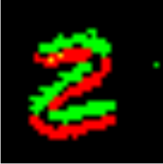Example of binary event frame [Kogler2009]
- Accumule des événements pour reconstruire des frames utilisables par des algorithmes conventionnels
- Très populaire car très intuitif
- Perte de l'information temporelle
- 🅠Performances
Bina-Rep (ICIP 2022)
- Event Frames mais avec information temporelle ⏳
- Plus "sparse"
- Résultats compétitifs 🥈 voire état de l'art 🥇 en event-based recognition
- Précision
- Robustesse
Binary Event Frames
 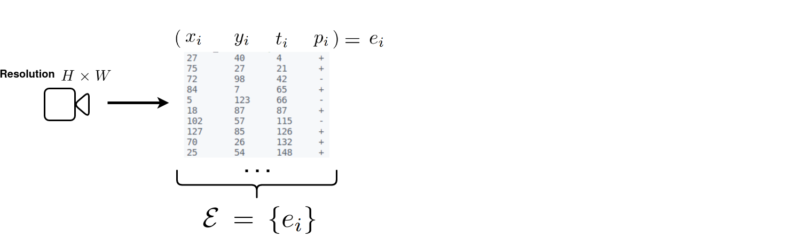
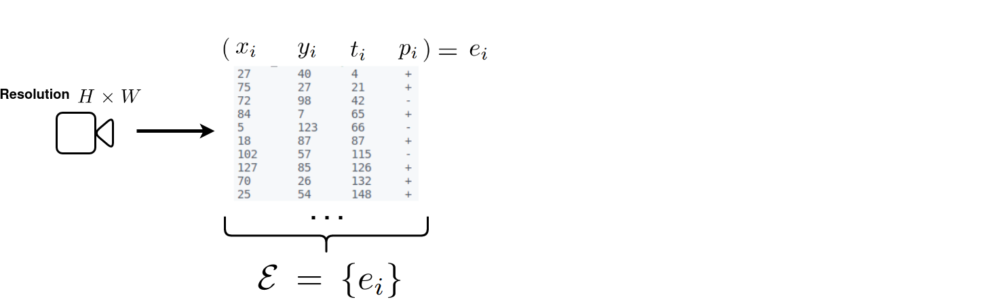


Bina-Rep Event Frames
 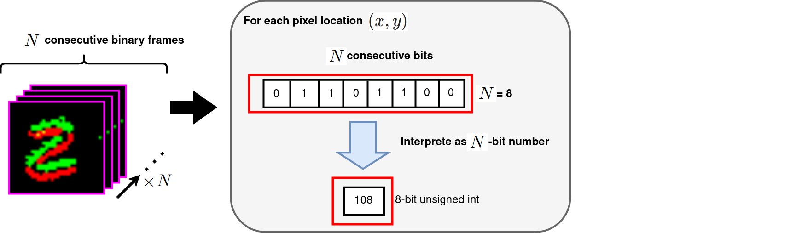
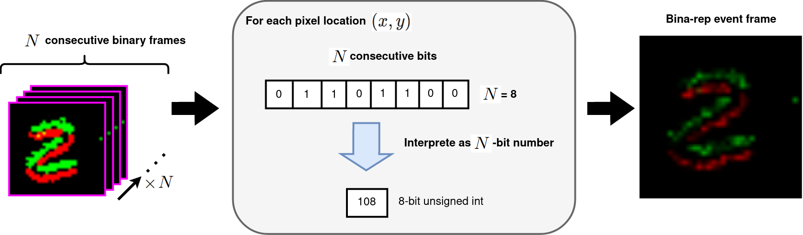
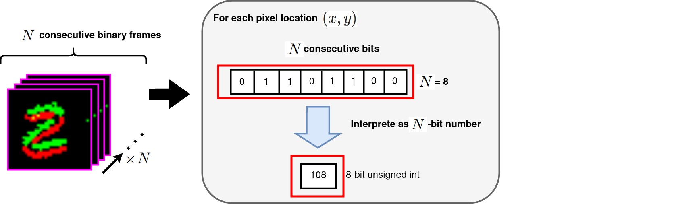
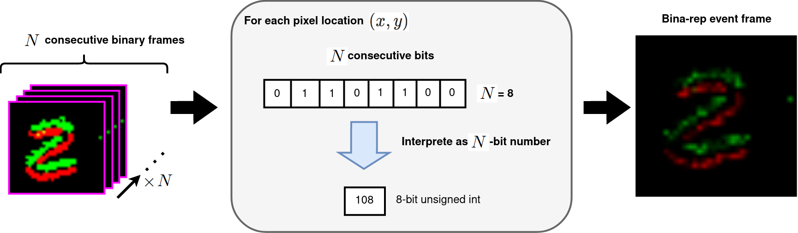
Séquence de Bina-Rep Frames
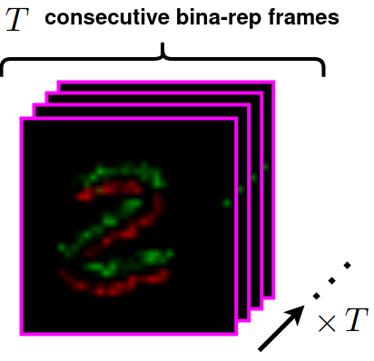- Sparse : $T$ bina-rep frames of $N$-bit numbers $ = T \times N$ binary event frames
Résultats
Expérience:
classification avec ResNet-18 + event
representation

 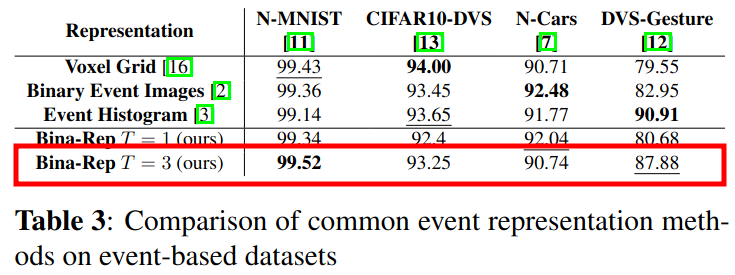
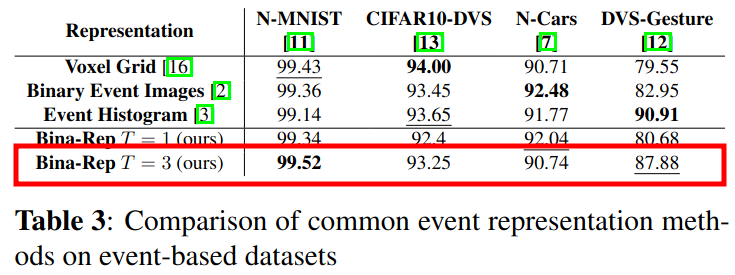


 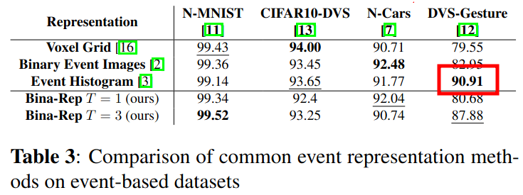
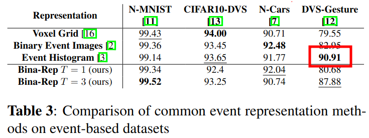

État de l'art

Robustesse
 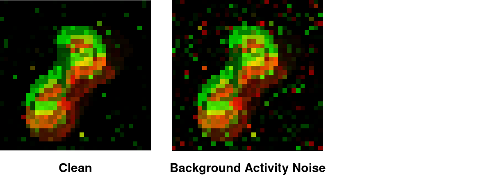
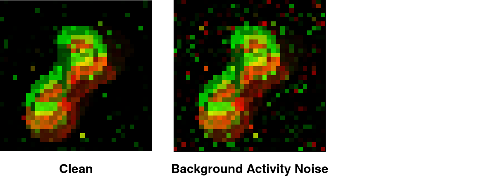

- Robustesse comparable
- Plus de bina-rep frames est meilleur
Spiking Neural Networks
Aperçu
From here: https://www.youtube.com/watch?v=oG0PTP3ogCA
- Bio-inspirés (neurones impulsionnels)
- Neurones communiquent par impulsions asynchrones
- Nativement spatio-temporel
Avantages
- SNN 🤠DVS
- Implémentation sur hardware neuromorphique [Davies2021]
- Ultra-basse consommation
- Récentes avances sur l'apprentissage profond pour les SNNs 🧠[Neftci2019]
Domaine exploratoire
- Hardware neuromorphique 👶
- Principalement simulation sur GPU
- Trop lourds pour les puces neuromorphiques actuelles
- Tâches peu complexes
- N-MNIST, CIFAR10-DVS, DVS-Gesture, ...
- Ca commence à changer
Opportunités
- Tout est à faire ⚒️
- Analyses nécessaires 👁️‍🗨️
- Prévoir le futur de la vision embarquée
Object Localization (CBMI 2021 & ...)
- SNNs supervisés pour des tâches de vision "modernes"
- Parmis les premiers travaux disponibles
- Caméras événementielles et conventionnelles
- Analyses contre ANN
- Précision 🎯
- Robustesse 💪
- Consommation énergétique 🔋
Aperçu
- Deep architecture: ResNet-18
- Backprop-trained SNN
- DVS Localization Dataset: N-Caltech101
Résultats qualitatifs
- Ground truth en Gris foncé
- Prédiction en Gris clair
🉠Succès : utilisation du SNN validée ğŸ‰
SNN ⚔️ ANN
Précision 🎯
- SNN 🥇 à faible latence
- ANN reste constant
SNN ⚔️ ANN
Robustesse 💪 (1)
Hot Pixels Noise
Background Activity Noise
SNN ⚔️ ANN
Robustesse 💪 (2)
- SNN sensible aux corruptions
SNN ⚔️ ANN
Consommation énergétique 🔋
- Simulation sur puce CMOS de 45nm [Kim2021]
- Latence SNN $T=8$
SNN consomme $45.48\times$ moins
Encore mieux sur des frames
Conclusion
Discussion
Caméras événementielles introduisent un tout nouveau paradigme en vision artificielle
- 📋 Adaptation d'algorithme existant (Event Frames)
- 🆕 Approches émergentes (Spiking Neural Networks)
Fort impact pour la communauté
Références
- [Gallego2020]: G. Gallego, T. Delbrück, G. Orchard, C. Bartolozzi, B. Taba, A. Censi, S. Leutenegger, A. J. Davison, J. Conradt, K. Daniilidis et al., “Event-based vision: A survey,†IEEE transactions on pattern analysis and machine intelligence, vol. 44, no. 1, pp. 154–180, 2020.
- [Kim2021]: Y. Kim, J. Chough, and P. Panda, “Beyond classification: Directly training spiking neural networks for semantic segmentation,†arXiv preprint arXiv:2110.07742, 2021.
- [Kogler2009]: Kogler, et al. "Bio-inspired stereo vision system with silicon retina imagers." International Conference on Computer Vision Systems. Springer, Berlin, Heidelberg, 2009
- [Davies2021]: M. Davies, A. Wild, G. Orchard, Y. Sandamirskaya, G. A. F. Guerra, P. Joshi, P. Plank, and S. R. Risbud, “Advancing neuromorphic computing with loihi: A survey of results and outlook,†Proceedings of the IEEE, vol. 109, no. 5, pp. 911–934, 2021.
- [Neftci2019]: E. O. Neftci, H. Mostafa, and F. Zenke, “Surrogate gradient learning in spiking neural networks: Bringing the power of gradient-based optimization to spiking neural networks,†IEEE Signal Processing Magazine, vol. 36, no. 6, pp. 51–63, 2019.
Publications
- S. Barchid, J. Mennesson and C. Djéraba, "Bina-Rep Event Frames: A Simple and Effective Representation for Event-Based Cameras," 2022 IEEE International Conference on Image Processing (ICIP), 2022, pp. 3998-4002, doi: 10.1109/ICIP46576.2022.9898061.
- Barchid, Sami, José Mennesson, and Chaabane Djéraba. "Deep Spiking Convolutional Neural Network for Single Object Localization Based On Deep Continuous Local Learning." 2021 International Conference on Content-Based Multimedia Indexing (CBMI). IEEE, 2021.
- Barchid, Sami, et al. "Spiking neural networks for frame-based and event-based single object localization." arXiv preprint arXiv:2206.06506 (2022).